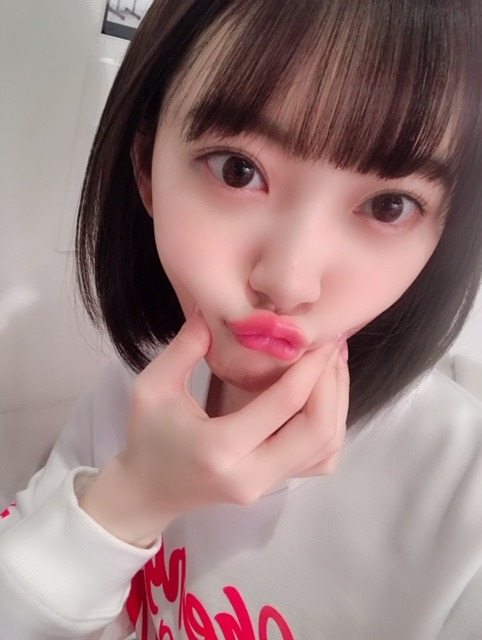
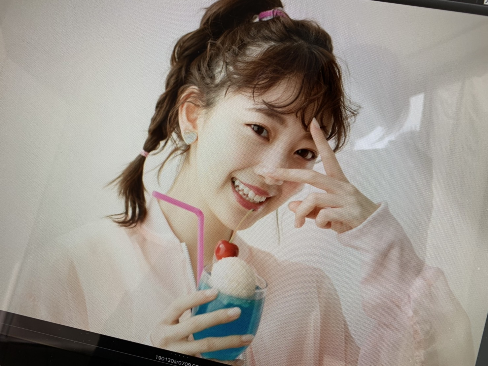
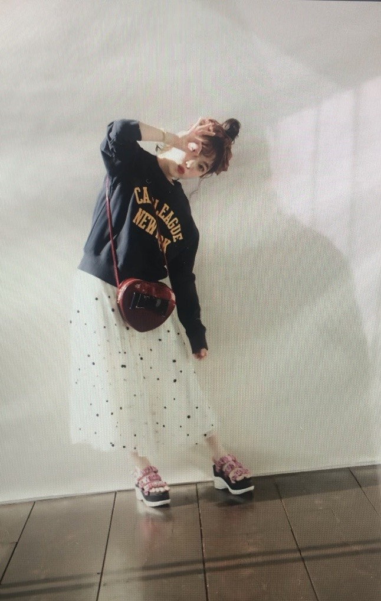
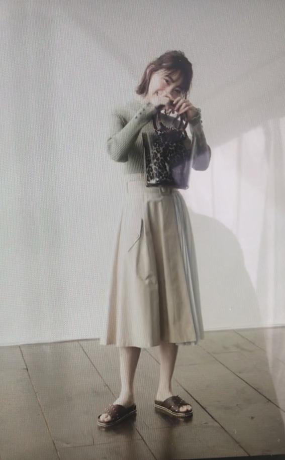
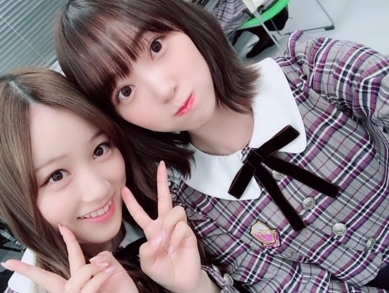

2019/0318Monあまいもの食べたい
最近無性に甘いものが食べたくて
家族でスーパーに行ってフルーツを大量買いしました。笑
いちご ザクロ メロン 文旦 梨...
う〜ん 早く桃の季節にならないかな〜

あ〜温泉行きたいな〜
ar発売中です！！
見てくれたかな？
茶髪ロングです〜次号からはショート

しゅわあまさん
ほろにがさん
どちらがタイプですか？✨


エクステ結んで地毛だけ残すとショート風。笑
最近はいろんな撮影や収録をしながら
アルバム制作をしています☺︎
諸々お楽しみに！
告知
3/23 B.L.T.
3/21(木)19:00〜22:00 テレビ朝日
「アメトーーク!ゴールデン3時間SP」
絵心ない芸人のコーナーに出させていただきました！ずっと見ていた大好きな番組に初めて参加させていただけて幸せです。私なりの画風で挑ませていただきました✨
3/21(木)20:00〜 TBS
「CDTVスペシャル！」
卒業シーズンスペシャルですが何を披露するかはお楽しみに！こちらもお見逃しなくです！
3/23(土)23:00～24:30 NHK総合
「#坂道テレビ ～乃木と欅と日向～」
齊藤京子ちゃんと小林由依ちゃんと料理をしたりお話しをしました✨人見知りあまり出てないといいな。笑

#みなみおな
#2人共大人になったね
#マイペース
では！！
2019/03/18 20:24
コメント(424)
ブログ更新ありがとう～
今日もかわいいね☺
番組楽しみにしてます！
今日もかわいいね☺
番組楽しみにしてます！
ブログありがとうー！僕はしゅわにがさんがすきです
未央奈～こんばんは！
ぽてとです！
自分も甘いもの、ふと食べたくなる♪
そんな時はいつもセブンイレブンの
Wシュークリーム買ってる！
未央奈も是非食べてみてー♪
みなみおな良いね！！
確かに初期のみなみおなから見たら
大人っぽくなったね(* ^ー゜)ノ
じゃあまたね！
ぽてとです！
自分も甘いもの、ふと食べたくなる♪
そんな時はいつもセブンイレブンの
Wシュークリーム買ってる！
未央奈も是非食べてみてー♪
みなみおな良いね！！
確かに初期のみなみおなから見たら
大人っぽくなったね(* ^ー゜)ノ
じゃあまたね！
ブログ更新ありがとう！
どれも楽しみにしてます！
みなみおな最高！！！
どれも楽しみにしてます！
みなみおな最高！！！
未央ちゃん
昨日は握手会ありがとう！
握手会でしてたカラコンの種類知りたいです！
あと、コンシーラー、the seamともう1つも教えてほしい( ´-` )♡
またブログとかで春メイク回とかやってみてほしい〜！
応援しています
昨日は握手会ありがとう！
握手会でしてたカラコンの種類知りたいです！
あと、コンシーラー、the seamともう1つも教えてほしい( ´-` )♡
またブログとかで春メイク回とかやってみてほしい〜！
応援しています
みなみおな良きかな
(^o^)
(^o^)
未央奈ちゃんブログ更新ありがとう
いつも乃木坂工事中などでは
堀
の方がよくピックアップされるので
未央奈というのに少しの違和感がありますが
素敵なお名前
いつも友達と乃木坂の話をする時は
未央奈
と言っていますがブログのコメントで
未央奈
と呼ぶのは少し恥ずかしいし滅相もないので
未央奈ちゃんと呼ばせていただきます
未央奈ちゃんが出したフルーツ
私の大好きなフルーツ3つが入っていて
びっくり
無性にこれを食べたい！！って時
ありますよね
めちゃくちゃわかります
私は今はビスケットサンドというアイスにハマっていて
時折
ビスケットサンドたべたぁぁぁい！！
って頭の中それしかないんじゃないかと思うくらい
脳内がビスケットサンドに占拠されます
食って、食べる力ってすごいですよね
好き！と食！の力って本当に偉大だと思います
あ、あと眠い！ですね
睡魔はどうしようもできません
しゅわあまさんとほろにがさん
どちらも同じくらい好きなところがあって
選びきれません
でもどちらかと言うとほろにがさんがタイプです
アメトーークとCDTV
同じ日！！そして時間被る！！

未央奈ファンはどうしたら良いのでしょう
うーーーーーーん
考えた結果、頑張って交互で見ます
どちらも大好きな番組なので今から楽しみにしています
みなみおな
可愛すぎるーーーーーー！！！
どちらも可愛い可愛すぎる選べませんてぐらい可愛すぎる
可愛いの言葉以上の言葉って出てこないものですかね
外ハネがまた可愛すぎる
日に日に可愛くなっていく未央奈ちゃん
いや元から可愛いんだけどね
可愛さのスピードがものすごい
これからの未央奈ちゃんにも期待大です
暖かいんだか寒いんだか
梅ちゃんのブログのタイトルのようですが
そんな気温差にも負けず
体調など崩さないようにお過ごしください
暖かくしてくださいね
休息を取れる時は取ってくださいね
いつもファンは願っております
これからも応援しています
未央奈大好き！！
いつも乃木坂工事中などでは
堀
の方がよくピックアップされるので
未央奈というのに少しの違和感がありますが
素敵なお名前
いつも友達と乃木坂の話をする時は
未央奈
と言っていますがブログのコメントで
未央奈
と呼ぶのは少し恥ずかしいし滅相もないので
未央奈ちゃんと呼ばせていただきます
未央奈ちゃんが出したフルーツ
私の大好きなフルーツ3つが入っていて
びっくり
無性にこれを食べたい！！って時
ありますよね
めちゃくちゃわかります
私は今はビスケットサンドというアイスにハマっていて
時折
ビスケットサンドたべたぁぁぁい！！
って頭の中それしかないんじゃないかと思うくらい
脳内がビスケットサンドに占拠されます
食って、食べる力ってすごいですよね
好き！と食！の力って本当に偉大だと思います
あ、あと眠い！ですね
睡魔はどうしようもできません
しゅわあまさんとほろにがさん
どちらも同じくらい好きなところがあって
選びきれません
でもどちらかと言うとほろにがさんがタイプです
アメトーークとCDTV
同じ日！！そして時間被る！！
未央奈ファンはどうしたら良いのでしょう
うーーーーーーん
考えた結果、頑張って交互で見ます
どちらも大好きな番組なので今から楽しみにしています
みなみおな
可愛すぎるーーーーーー！！！
どちらも可愛い可愛すぎる選べませんてぐらい可愛すぎる
可愛いの言葉以上の言葉って出てこないものですかね
外ハネがまた可愛すぎる
日に日に可愛くなっていく未央奈ちゃん
いや元から可愛いんだけどね
可愛さのスピードがものすごい
これからの未央奈ちゃんにも期待大です
暖かいんだか寒いんだか
梅ちゃんのブログのタイトルのようですが
そんな気温差にも負けず
体調など崩さないようにお過ごしください
暖かくしてくださいね
休息を取れる時は取ってくださいね
いつもファンは願っております
これからも応援しています
未央奈大好き！！
未央奈ブログ更新ありがとう
一昨日の名古屋ありがとう 未央奈と握手するの久しぶりで、緊張でうまく話せなかったけどやっぱ可愛いね
未央奈と握手するの久しぶりで、緊張でうまく話せなかったけどやっぱ可愛いね
2枚目の写真いつもと違っていい感じだね 今度握手会でその髪型でやってほしい
今度握手会でその髪型でやってほしい
一昨日の名古屋ありがとう
2枚目の写真いつもと違っていい感じだね
みなみおなきたーーーーー
未央奈～ こんにちは
ブログ更新ありがとうございます。
名古屋個握、おつかれさまでした。
あまいもの？ フルーツは健康にもいいし、口当たりいいし、ホントうれしいですね。
温泉に行きたい？ ゴメン、お先にこの前、行ってきちゃいました。そして一泊した後の朝はバイキング、フルーツてんこ盛りにヨーグルトもたっぷりつけての「プチぜいたく」朝食、ちょっと食べすぎたかな？ フルーツやデザートは「別腹」と言うことで‥‥。おじさんには無理か‥‥。
というわけで、たくさんの雑誌・テレビの告知ありがとうございます。「坂道テレビ」の特番、これは楽しみです。ふだんならBSの「乃木坂４６SHOW」の放送ということで、３倍枠もあるじゃないですか。NHK総合テレビでの放送ということで、CMなしのしかもフルコーラス披露、これまた楽しみです。
名古屋全握・大阪全握、続きます。体調管理にはくれぐれもご注意くださいね。月末の大阪でお会いできること楽しみにしています。
ブログ更新ありがとうございます。
名古屋個握、おつかれさまでした。
あまいもの？ フルーツは健康にもいいし、口当たりいいし、ホントうれしいですね。
温泉に行きたい？ ゴメン、お先にこの前、行ってきちゃいました。そして一泊した後の朝はバイキング、フルーツてんこ盛りにヨーグルトもたっぷりつけての「プチぜいたく」朝食、ちょっと食べすぎたかな？ フルーツやデザートは「別腹」と言うことで‥‥。おじさんには無理か‥‥。
というわけで、たくさんの雑誌・テレビの告知ありがとうございます。「坂道テレビ」の特番、これは楽しみです。ふだんならBSの「乃木坂４６SHOW」の放送ということで、３倍枠もあるじゃないですか。NHK総合テレビでの放送ということで、CMなしのしかもフルコーラス披露、これまた楽しみです。
名古屋全握・大阪全握、続きます。体調管理にはくれぐれもご注意くださいね。月末の大阪でお会いできること楽しみにしています。
ショートカワエエヱ！！！！！！！！！！！！！！！！！！！！！
全
部
カ
ワ

 c(
c( )
)
エ
江
！
！
ロングカワエエヱ！！！！！！！！！！！！！！！！！！！！！！
全
部
カ
ワ
エ
江
！
！
ロングカワエエヱ！！！！！！！！！！！！！！！！！！！！！！
文旦は、鹿児島県民ならみんな知ってる阿久根市が発祥！
名前の由来は持ち込み主の謝文旦さんから！桃ちゃんに聞いてみて(^^)
みなみおな尊い〜
テレビ、今旅行に来てて見られるかわからんけど楽しみにしてるね
名前の由来は持ち込み主の謝文旦さんから！桃ちゃんに聞いてみて(^^)
みなみおな尊い〜
テレビ、今旅行に来てて見られるかわからんけど楽しみにしてるね
みなみおなはやばい
日本いちです
日本いちです
未央奈～☆☆
ほろにがさんがタイプだけど、
しゅわあまさんの未央奈も可愛いんだよなー
未央奈はどっちも着こなせて似合っちゃうから、
選ぶの大変だよ～笑
今度の祝日と土曜日も楽しみだな～
未央奈は、色んなところで仲良しができてる印象があるから、
人見知りのイメージはあんまりないよ。
他の坂道メンバーとの会話ってどんな感じなんだろう。
なんか凄く楽しみ！
あ、何かのアルバム制作をしてるんだね。
ここでも楽しみが増えたー
ホットギミックもそうだけど、
未央奈から楽しみをたくさんもらってるなー
未央奈、幸せな気持ちをいつも本当にありがとう！
ほろにがさんがタイプだけど、
しゅわあまさんの未央奈も可愛いんだよなー
未央奈はどっちも着こなせて似合っちゃうから、
選ぶの大変だよ～笑
今度の祝日と土曜日も楽しみだな～
未央奈は、色んなところで仲良しができてる印象があるから、
人見知りのイメージはあんまりないよ。
他の坂道メンバーとの会話ってどんな感じなんだろう。
なんか凄く楽しみ！
あ、何かのアルバム制作をしてるんだね。
ここでも楽しみが増えたー
ホットギミックもそうだけど、
未央奈から楽しみをたくさんもらってるなー
未央奈、幸せな気持ちをいつも本当にありがとう！
ほろにがいいです！
似合ってる！
似合ってる！
堀さん、こんばんは。
甘いものが欲しいのは沢山あたまを使った証拠ですね。
堀さんの表情で決めるなら笑顔のしゅわあまさんが好きで、服装で言ったらほろにがさんが好きです。4枚目の写真のスカートは誌面だとソフトクリームのチョコとバニラのミックスみたいでカワイイと思います。
にしても大人なだけあって大人っぽい柔らかい表情が出来るようになったと思います。
どの番組も心から楽しみにしてます。アルバムの制作もCDTVの準備も果物で糖分摂りつつ頑張ってくださいね。ブログ更新してくれて嬉しいです。
甘いものが欲しいのは沢山あたまを使った証拠ですね。
堀さんの表情で決めるなら笑顔のしゅわあまさんが好きで、服装で言ったらほろにがさんが好きです。4枚目の写真のスカートは誌面だとソフトクリームのチョコとバニラのミックスみたいでカワイイと思います。
にしても大人なだけあって大人っぽい柔らかい表情が出来るようになったと思います。
どの番組も心から楽しみにしてます。アルバムの制作もCDTVの準備も果物で糖分摂りつつ頑張ってくださいね。ブログ更新してくれて嬉しいです。
ニンニンなの⊂(ο･㉨･ο）⊃”くまﾃﾞｽ…
花粉fightだぷーq(T▽Tq)(pT▽T)p
前髪流し堀殿きゃわわうれぴーぽーo(￣◎￣)o ﾊﾞﾌﾞｩ♡
花粉fightだぷーq(T▽Tq)(pT▽T)p
前髪流し堀殿きゃわわうれぴーぽーo(￣◎￣)o ﾊﾞﾌﾞｩ♡
みなみおな尊い。。。////////
死んだかわいすぎる
かわいさの塊だよ！！！！！！！！！
圧倒的ロング派ですけどショートも可愛いっす()
けどロング大好きっずなのでロング待ってるね ♥︎
死んだかわいすぎる
かわいさの塊だよ！！！！！！！！！
圧倒的ロング派ですけどショートも可愛いっす()
けどロング大好きっずなのでロング待ってるね ♥︎
ブログ更新ありがとう！
みおちゃんが買ったものの中だとメロンと梨が特に好きだな〜！
フルーツって美味しいよね☺︎
みおなポーズかわいい❤︎
みおなポーズ流行るといいな〜！
わたしはどちらかと言えばしゅわあまが好き！
なんかみおちゃんの可愛さが溢れてる感じするの☺︎
ほろにがは大人っぽくていいね！！
アメトーク、CDTV、坂道テレビ全部楽しみ♪
みなみおなの写真違うver.もありがとう❤︎
みおちゃんが買ったものの中だとメロンと梨が特に好きだな〜！
フルーツって美味しいよね☺︎
みおなポーズかわいい❤︎
みおなポーズ流行るといいな〜！
わたしはどちらかと言えばしゅわあまが好き！
なんかみおちゃんの可愛さが溢れてる感じするの☺︎
ほろにがは大人っぽくていいね！！
アメトーク、CDTV、坂道テレビ全部楽しみ♪
みなみおなの写真違うver.もありがとう❤︎
未央奈ちゃん大好き
おはようございます。
ってめっちゃ早くにごめんね(笑)
少し偏頭痛で目が覚めた！
雨かな？
仕事休みで良かった(笑)
果物は良いね！
普段何気に摂取してなくてホンマは一日少しは食べたが良いのにね。
なかなかつい食べない！
堀ちゃんがあげてる果物も良いね！
俺はそれに付け加えてオレンジ、葡萄かな？
スイカはまだ少し早いかな(笑)
スイカ子供の頃よく縁側で食べた記憶があるや(笑)
田舎あるある？(笑)かな？
arどちらかと言えばほろにがさんかな？
やはりショーが好き。
あくまで個人的意見やから(笑)
最近若手女優さんでも、杉咲花ちゃん、浜辺美波ちゃん、葵わかなちゃんとかの髪型好きかな？
勿論女優さんてとしてもね！
今若手女優も皆さん頑張っているもんね！
応援したくなるよ！
頑張っている人好きなんで(笑)
21日、23日楽しみやね！
NHKのは特に楽しみ。
ゆいぽん、京子ちゃんとの化学反応どんなかな？
互いに刺激あって切磋琢磨し良いと思うよ！
ではではまたね！
体調気をつけてな。
ほなね、堀ちゃん！
今日も一日頑張りましょう！
ってめっちゃ早くにごめんね(笑)
少し偏頭痛で目が覚めた！
雨かな？
仕事休みで良かった(笑)
果物は良いね！
普段何気に摂取してなくてホンマは一日少しは食べたが良いのにね。
なかなかつい食べない！
堀ちゃんがあげてる果物も良いね！
俺はそれに付け加えてオレンジ、葡萄かな？
スイカはまだ少し早いかな(笑)
スイカ子供の頃よく縁側で食べた記憶があるや(笑)
田舎あるある？(笑)かな？
arどちらかと言えばほろにがさんかな？
やはりショーが好き。
あくまで個人的意見やから(笑)
最近若手女優さんでも、杉咲花ちゃん、浜辺美波ちゃん、葵わかなちゃんとかの髪型好きかな？
勿論女優さんてとしてもね！
今若手女優も皆さん頑張っているもんね！
応援したくなるよ！
頑張っている人好きなんで(笑)
21日、23日楽しみやね！
NHKのは特に楽しみ。
ゆいぽん、京子ちゃんとの化学反応どんなかな？
互いに刺激あって切磋琢磨し良いと思うよ！
ではではまたね！
体調気をつけてな。
ほなね、堀ちゃん！
今日も一日頑張りましょう！
未央奈、ホントに可愛いね。
ミナミオナも、
最高に癒やされます。
甘いビタミン一杯取って、
元気に頑張って下さいね。
ミナミオナも、
最高に癒やされます。
甘いビタミン一杯取って、
元気に頑張って下さいね。
乃木坂メンバーはみんな可愛いけど、堀ちゃんは言動含めて好きだから乃木中とかみてると癒される！
更新有難う！
お疲れ様でした！
まぁ、今吾輩も甘いもの食べたいな
何が良いかな？
未央奈の言った事を試して思うのわ…
未央奈が可愛いぃぃぃぃぃ
色んな事を楽しみにしているんや
ずっと応援するわ
何時も頑張りや
めっちゃ好きやで！
お疲れ様でした！
まぁ、今吾輩も甘いもの食べたいな
何が良いかな？
未央奈の言った事を試して思うのわ…
未央奈が可愛いぃぃぃぃぃ
色んな事を楽しみにしているんや
ずっと応援するわ
何時も頑張りや
めっちゃ好きやで！
コメント初めてです。
アメトーーク！めっちゃ楽しみです！
愛媛の道後温泉おすすめです。
鯛めしとか柑橘とか周辺に美味しいものいっぱいありますよ。
アメトーーク！めっちゃ楽しみです！
愛媛の道後温泉おすすめです。
鯛めしとか柑橘とか周辺に美味しいものいっぱいありますよ。
かわいくてきれいだね 顔だけ見ても面白い!!♡♡♡
堀さん、おはようございます。
果物いろいろ買いましたね。今は美味しい果物を一年中買うことができるので嬉しいですが、やはり季節の果物の美味しさは格別。それぞれの季節のフルーツを楽しみましょう。
『ar』さんでのモデル活動も順調なようで何より。えーとご質問の件ですが、やっぱり僕はもう大人なので（笑）、「ほろにがさん」の方が好みかな。
今週も雑誌にテレビにと、堀さんと乃木坂46をたくさん観ることができて嬉しいなり。『アメトーーク!』での堀画伯の活躍に注目です。
ではまたコメントします。今日も佳き日でありますように。
さらばだ、また会おう！（気球に乗って去りぬ〜）
果物いろいろ買いましたね。今は美味しい果物を一年中買うことができるので嬉しいですが、やはり季節の果物の美味しさは格別。それぞれの季節のフルーツを楽しみましょう。
『ar』さんでのモデル活動も順調なようで何より。えーとご質問の件ですが、やっぱり僕はもう大人なので（笑）、「ほろにがさん」の方が好みかな。
今週も雑誌にテレビにと、堀さんと乃木坂46をたくさん観ることができて嬉しいなり。『アメトーーク!』での堀画伯の活躍に注目です。
ではまたコメントします。今日も佳き日でありますように。
さらばだ、また会おう！（気球に乗って去りぬ〜）
アメトーク夜勤明けやし見れそう( ˙ᵕ˙ )ついに堀画伯がゴールデンデビューか(*´꒳`*)
未央ちゃん
ブログ更新ありがとう
フルーツ食べたいね～
歯がギシギシしても
伊予柑とか食べたい
アメトーーク楽しみにしてます
花粉症も体調も
気をつけてね
ブログ更新ありがとう
フルーツ食べたいね～
歯がギシギシしても
伊予柑とか食べたい
アメトーーク楽しみにしてます
花粉症も体調も
気をつけてね
久しぶりにブログみてみたらみなみおなーーーー！！！！！
大好きやお！！ー！
大好きやお！！ー！
更新ありがと～！！
アメトーク見ます！！「堀画伯」をばっちりチェックするね(笑)
みなみおなの2ショット大好き
可愛い
アメトーク見ます！！「堀画伯」をばっちりチェックするね(笑)
みなみおなの2ショット大好き
可愛い
再びコメント。
雨シトシト降っておる！
東京は良い天気かな？
果物の話にブログ読み返していて最初の写真特に可愛いなと思って。
果物みたいな唇食べちゃうで(笑)
あと、みなみちゃんとのショットも可愛いね。
乃木中見ていても二人隣が多いような気がする。
仲良しさんやんね！
べっぴん可愛いでエエやん！(笑)
ではではまたね！
ほなね、堀ちゃん！
雨シトシト降っておる！
東京は良い天気かな？
果物の話にブログ読み返していて最初の写真特に可愛いなと思って。
果物みたいな唇食べちゃうで(笑)
あと、みなみちゃんとのショットも可愛いね。
乃木中見ていても二人隣が多いような気がする。
仲良しさんやんね！
べっぴん可愛いでエエやん！(笑)
ではではまたね！
ほなね、堀ちゃん！
CDTVスペシャル観るよ！
未央奈ちゃん、おはようございます。
ブログ更新ありがとう、とっても嬉しいです。
飛び石連休は未央奈デーが続くから、とっても楽しみ。観ながら録画もしないとね
東京はもうすぐ桜の開花だけど、お花見の計画はあるのかな？花粉症だから室内からお花見かな？
準地元の名古屋での握手会、楽しんでくださいね。
乃木坂46と頑張ってるcuteでsmartな未央奈ちゃんを応援しています。
ブログ更新ありがとう、とっても嬉しいです。
飛び石連休は未央奈デーが続くから、とっても楽しみ。観ながら録画もしないとね
東京はもうすぐ桜の開花だけど、お花見の計画はあるのかな？花粉症だから室内からお花見かな？
準地元の名古屋での握手会、楽しんでくださいね。
乃木坂46と頑張ってるcuteでsmartな未央奈ちゃんを応援しています。
みなみおなのツーショットが見られるこの日をずっと待ち続けていました。今息もできないくらいに幸せです。表題曲の2人のポジションが離れてから2人の距離感も少し離れていたのかな？？何となくまた仲良くなってきてるのは分かってたけど、いざツーショットがくるとこんなにも嬉しいとは思いませんでした。
いつもマイペースで周りにツッコまれる側の未央奈が、それ以上にマイペースなみなみに翻弄される、そんなマイペース×マイペース=ふわふわな画が大好きです。
2人とも大人になったからまた距離が近くなったのかもしれないね。深いね。みなみおなは永遠。いつかみなみおなの755が復活したとき、おそらく自分は息絶えると思います。待ってます。
いつもマイペースで周りにツッコまれる側の未央奈が、それ以上にマイペースなみなみに翻弄される、そんなマイペース×マイペース=ふわふわな画が大好きです。
2人とも大人になったからまた距離が近くなったのかもしれないね。深いね。みなみおなは永遠。いつかみなみおなの755が復活したとき、おそらく自分は息絶えると思います。待ってます。
やば、かわいい
未央奈～。
おはよう。おらもフルーツ大好きだよ。でも、梨だけは秋に食べたいなぁ。
(叉、書き込みしますね。)
おはよう。おらもフルーツ大好きだよ。でも、梨だけは秋に食べたいなぁ。
(叉、書き込みしますね。)
未央奈ちゃん更新ありがとー！
自分も最近無性に甘いものが食べたくなる(^o^)
突然くるのよね。自分はチョコレートを食べてます。
未央奈ちゃんはどんなスタイルでも似合うな！
ほろにが系が好きかなー。
いや、選べない！全部可愛い！
雑誌にTV、楽しみにしてるよ！
ちゃんとチェックするからね！
みなみおな！最高！
自分も最近無性に甘いものが食べたくなる(^o^)
突然くるのよね。自分はチョコレートを食べてます。
未央奈ちゃんはどんなスタイルでも似合うな！
ほろにが系が好きかなー。
いや、選べない！全部可愛い！
雑誌にTV、楽しみにしてるよ！
ちゃんとチェックするからね！
みなみおな！最高！
堀さん可愛いからフルーツ食べてるとこ見たいです
しゅわあまさん普段見れないから斬新で綺麗なんでこっちですかねー笑
遂に堀さんがアメトーク出演^ ^
待ってましたー^ ^
絶対に見ますね^ ^
その他も家にいる時間なので必ずみますー
しゅわあまさん普段見れないから斬新で綺麗なんでこっちですかねー笑
遂に堀さんがアメトーク出演^ ^
待ってましたー^ ^
絶対に見ますね^ ^
その他も家にいる時間なので必ずみますー
風邪で寝てて遅くなりました！
みなみおな最高です！元気貰えましたー！
これからも応援します！
みなみおな最高です！元気貰えましたー！
これからも応援します！
堀ちゃんお疲れ様〜
ザクロと聞くと小学生の頃を思い出すなぁ
友達の家の庭にザクロの木があって、親に内緒でよくもらってました。笑
僕はほろにがさんがタイプです！！！
大人な感じ似合ってます☺️
今週はテレビでたくさん堀ちゃんを見れそうで楽しみです☺️
全部チェックしますね！！
ザクロと聞くと小学生の頃を思い出すなぁ
友達の家の庭にザクロの木があって、親に内緒でよくもらってました。笑
僕はほろにがさんがタイプです！！！
大人な感じ似合ってます☺️
今週はテレビでたくさん堀ちゃんを見れそうで楽しみです☺️
全部チェックしますね！！
文旦好きなんですか！！？僕の出身高知の特産品です!嬉しいな
未央奈おはよう
俺は種無し&皮が食べられるブドウにはまっていて、スーパーに行くと必ずと言っていいほど購入してるよ。
美味しいから未央奈も食べてみてね。
この季節になると無性にイチゴ狩りに行きたくなるんだよね。去年は行けなかったから今年は行きたいと思って友達と計画中なんだよ。
アメトーーク、CDTVは握手会に参加予定(仕事が片付いて休めれば行く予定)だから録画をしておいたよ。未央奈の個性的な絵が好きだから、未央奈がどんな絵を描くのか楽しみだよ
もちろんB.L.T、坂道テレビもチェックするよ。
4月から新年度が始まり、何か新たなことにチャレンジしたいと思っていて、ジムに通うことにしたよ。
仕事で座っている時間が多いことと、残業が多くて23:00頃に飯を食べて寝ることが多いから、運動不足&かなり太ってしまってので痩せるためにも頑張ろうと思っているので、未央奈も応援してね
ゴロ～
俺は種無し&皮が食べられるブドウにはまっていて、スーパーに行くと必ずと言っていいほど購入してるよ。
美味しいから未央奈も食べてみてね。
この季節になると無性にイチゴ狩りに行きたくなるんだよね。去年は行けなかったから今年は行きたいと思って友達と計画中なんだよ。
アメトーーク、CDTVは握手会に参加予定(仕事が片付いて休めれば行く予定)だから録画をしておいたよ。未央奈の個性的な絵が好きだから、未央奈がどんな絵を描くのか楽しみだよ
もちろんB.L.T、坂道テレビもチェックするよ。
4月から新年度が始まり、何か新たなことにチャレンジしたいと思っていて、ジムに通うことにしたよ。
仕事で座っている時間が多いことと、残業が多くて23:00頃に飯を食べて寝ることが多いから、運動不足&かなり太ってしまってので痩せるためにも頑張ろうと思っているので、未央奈も応援してね
ゴロ～
未央奈ちゃん。ブログ更新ありがとう！未央奈は、果物好きなのですね。3枚目の画像の衣装ナイスです。
ブログの更新ありがとう！
ホントに睨んでいてもふざけていても可愛い。
色んなところで未央奈を見れて幸せー
告知を待ってるね！！
これからも応援しているよーーー
ホントに睨んでいてもふざけていても可愛い。
色んなところで未央奈を見れて幸せー
告知を待ってるね！！
これからも応援しているよーーー
しゅわあまさんもほろにがさんも好きです！
絵心ない芸人絶対見ます
みなみおな可愛い！
絵心ない芸人絶対見ます
みなみおな可愛い！
お疲れ様です!
おはよう、みおな❗️❗️(笑)
マスクマンです❗️(笑)
ブログありがとうございます❗️(笑)
↑なんだコレ(笑) こんな言い方したことない❗️(笑)
みおな、ずっと忙しそうだね・・・
体調は大丈夫❓️
バスラ終わって、すぐにまた調子崩しちゃったじゃん❓️
まだまだ本調子ではないと思うから・・・
無理しないようにね・・・
先日の幕張メッセでの全国握手会・・・
帰り道、ダウンロードしてずっと観てるんだけど、みおな、完璧だったね❗️❗️(笑)
かわいいというか、なんというか、大人の雰囲気、出てきたね・・・
こう、なんて言うの❓️
髪を、フワッとさせて、ユルく巻いた、というか、ブロー、って言うの❓️
なんだろ・・・
5thの頃と比べて、スゴく変わったよね、みおな・・・
ほんと、大人になったね❗️(笑)
これは、みなみちゃんも同じよ・・・
幕張の時にさ、隣のレーンから、チラッと見えたんだけど、メチャメチャ可愛かった・・・(笑)
みなみちゃん、こんなに可愛かったっけ❓️みたいな・・・(笑)
このブログの最後の写メも、二人ともスゴくかわいい❗️❗️(笑)
みおなの、この顔は、いくつになってもかわいいままだね、きっと❗️(笑)
甘いもの・・・
フルーツから取るって、いいことだね・・・
身体にもとても良さそうだし、みおなは、ちゃんと、身体のことを考えて、ご飯作ってくれそうだからなぁ・・・
でも、ピーマンだけはイヤよ❗️❗️(笑)
日村さんも、思わずニヤケてたもんね❗️(笑)
そう来るかよ❗️みたいな・・・(笑)
でも、ほんと、乃木坂では、まいちゃんと、みおなは、料理上手いと思うんだよね・・・
みおな、何年前だったかな・・・
755でさ、おうちでご飯作ってる時の、写メを載せてくれたことあったけど、土鍋でご飯炊いたりしてたよね・・・
他にも、二品くらい同時進行で作ってて、いやぁ、みおな、慣れてるなぁ、って・・・
あれは、間違いないでしょ❗️(笑)
料理の腕前よ❗️❗️(笑)
僕が何も出来ないから、ほんと、感心しちゃう❗️(笑)
美味しいご飯食べて、体調管理も気を付けてね❗️❗️(笑)
それじゃ、またね❗️❗️(笑)
マスクマンです❗️(笑)
ブログありがとうございます❗️(笑)
↑なんだコレ(笑) こんな言い方したことない❗️(笑)
みおな、ずっと忙しそうだね・・・
体調は大丈夫❓️
バスラ終わって、すぐにまた調子崩しちゃったじゃん❓️
まだまだ本調子ではないと思うから・・・
無理しないようにね・・・
先日の幕張メッセでの全国握手会・・・
帰り道、ダウンロードしてずっと観てるんだけど、みおな、完璧だったね❗️❗️(笑)
かわいいというか、なんというか、大人の雰囲気、出てきたね・・・
こう、なんて言うの❓️
髪を、フワッとさせて、ユルく巻いた、というか、ブロー、って言うの❓️
なんだろ・・・
5thの頃と比べて、スゴく変わったよね、みおな・・・
ほんと、大人になったね❗️(笑)
これは、みなみちゃんも同じよ・・・
幕張の時にさ、隣のレーンから、チラッと見えたんだけど、メチャメチャ可愛かった・・・(笑)
みなみちゃん、こんなに可愛かったっけ❓️みたいな・・・(笑)
このブログの最後の写メも、二人ともスゴくかわいい❗️❗️(笑)
みおなの、この顔は、いくつになってもかわいいままだね、きっと❗️(笑)
甘いもの・・・
フルーツから取るって、いいことだね・・・
身体にもとても良さそうだし、みおなは、ちゃんと、身体のことを考えて、ご飯作ってくれそうだからなぁ・・・
でも、ピーマンだけはイヤよ❗️❗️(笑)
日村さんも、思わずニヤケてたもんね❗️(笑)
そう来るかよ❗️みたいな・・・(笑)
でも、ほんと、乃木坂では、まいちゃんと、みおなは、料理上手いと思うんだよね・・・
みおな、何年前だったかな・・・
755でさ、おうちでご飯作ってる時の、写メを載せてくれたことあったけど、土鍋でご飯炊いたりしてたよね・・・
他にも、二品くらい同時進行で作ってて、いやぁ、みおな、慣れてるなぁ、って・・・
あれは、間違いないでしょ❗️(笑)
料理の腕前よ❗️❗️(笑)
僕が何も出来ないから、ほんと、感心しちゃう❗️(笑)
美味しいご飯食べて、体調管理も気を付けてね❗️❗️(笑)
それじゃ、またね❗️❗️(笑)
おはようございます‼︎
ブログ更新、ありがとうございます♪
未央奈、偉いなあ。
甘いものが食べたくなって、フルーツを大量買いするなんて…‼︎
自分が甘いものを食べたくなった時は、チョコレートやケーキばっかり食べちゃう(苦笑)。
う〜ん、体に良くないことは分かっているんですけどね。
フルーツは甘いけど、ビタミンや食物繊維がたっぷりで、体に良いですもんね♪
未央奈を見習って、自分も少しお菓子を控えて、フルーツをたくさん食べるようにします‼︎
みなみおなの写真、とってもいい♪
一昨日放送された乃木中でも、席が隣同士でしたね‼︎
飛鳥ちゃんの珍プレー(‼︎)を見て、二人で仲良さそうに笑ってて、ほっこりしました♪
みなみおな、自分の中では『私、起きる。』のMVがとっても印象に残ってます。
プリン会とか、塩アイスとか、未央奈には仲良しコミュニティがいっぱいあるけど、みなみおなも健在で嬉しいです♪
ユニット曲とかできるといいですね‼︎
ではでは、また。
今日も未央奈にとっていい1日になりますように♪
ブログ更新、ありがとうございます♪
未央奈、偉いなあ。
甘いものが食べたくなって、フルーツを大量買いするなんて…‼︎
自分が甘いものを食べたくなった時は、チョコレートやケーキばっかり食べちゃう(苦笑)。
う〜ん、体に良くないことは分かっているんですけどね。
フルーツは甘いけど、ビタミンや食物繊維がたっぷりで、体に良いですもんね♪
未央奈を見習って、自分も少しお菓子を控えて、フルーツをたくさん食べるようにします‼︎
みなみおなの写真、とってもいい♪
一昨日放送された乃木中でも、席が隣同士でしたね‼︎
飛鳥ちゃんの珍プレー(‼︎)を見て、二人で仲良さそうに笑ってて、ほっこりしました♪
みなみおな、自分の中では『私、起きる。』のMVがとっても印象に残ってます。
プリン会とか、塩アイスとか、未央奈には仲良しコミュニティがいっぱいあるけど、みなみおなも健在で嬉しいです♪
ユニット曲とかできるといいですね‼︎
ではでは、また。
今日も未央奈にとっていい1日になりますように♪


ブログ更新ありがとう～
King of fruitsはさくらんぼ
昔は毎年さくらんぼ狩りに行ってたよ
ほりっぴ～は好き？
ar
ほろにが好き
めっちゃ素敵すぎるね